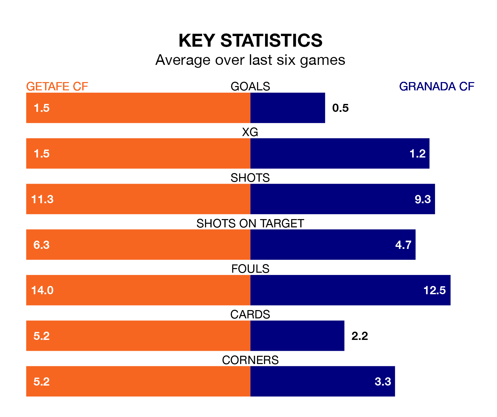

Granada CF come to Coliseum Alfonso Pérez to play Getafe CF on late Monday in poor form, having collected just four points from their last six games.
The visitors have won one and drawn one of their last six fixtures, while Getafe have two wins and a draw.
Granada are 19th in the table after 21 games, of which they have won two and drawn five, earning 11 points.
Getafe are nine places ahead of the visitors in 10th, with six wins and eight draws putting them on 26 points.
In the last 10 years, Getafe and Granada have played each other on 13 occasions. Getafe won two of them, Granada six, and they drew five times.
On average, Getafe scored 1.5 goals and Granada 1.6 in those matches.
Their last meeting was on November 11, when they played out a 1-1 draw.
In Borja Mayoral, the home side have one of the league's most on-form strikers so far this season. He has notched 13 goals in 20 appearances, to sit third in the scoring charts.
Granada's top scorers, with six goals each, are Myrto Uzuni and Bryan Zaragoza.
With 22 goals in 21 games so far this season, Granada are scoring at below the league average rate with 1.0 goals per game. And they are conceding more than average, letting in 42 goals at a rate of 2.0 per game.
Getafe, meanwhile, are average scorers, with 1.3 goals per game. They have conceded 1.4 goals per game.
Getafe's last match was on January 21, a 3-2 loss against CA Osasuna, with Mayoral Moya and Nemanja Maksimović getting the goals for Getafe.
Granada lost 1-0 against Atlético Madrid last time out, on January 22.
Updated: 09:18 (UTC), 23/01/24